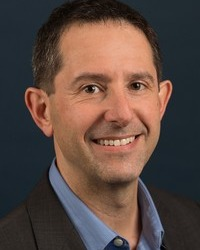
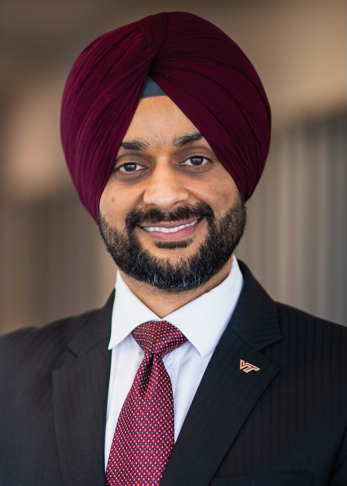
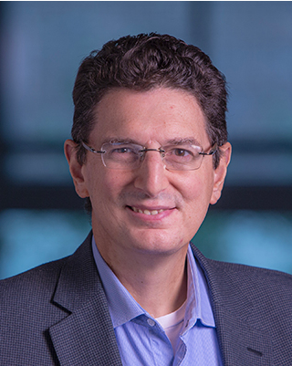

Predictive principles
When and why does collaboration outperform individual reasoning?
Communication, Organization, and Control
Towards a science of effective, reliable, and scalable collective intelligence.
Under what conditions does interaction among individually capable agents produce collective intelligence that is more effective, reliable, and scalable than individual reasoning?
AI collectives coordinate distributed reasoning, specialized knowledge, tool use, and action to accomplish complex objectives. As teams grow and tasks become longer, their performance increasingly depends on how information is exchanged, work is organized, and feedback is used.
This workshop brings foundation-model research together with information theory, distributed computing, control, optimization, game theory, and applied mathematics to develop mathematical abstractions, theoretical guarantees, and testable principles for collective intelligence.
When and why does collaboration outperform individual reasoning?
When do locally valid decisions combine into globally correct solutions?
How should communication, organization, and feedback evolve with the task?
We welcome mathematical analyses, principled algorithms, controlled empirical investigations, and benchmark designs that connect structural assumptions with measurable collective outcomes.
Communication determines how agents exchange information to coordinate decisions and accomplish shared objectives. A theoretical understanding of collective communication requires characterizing three fundamental properties: efficiency, or the communication cost necessary to achieve a task; sufficiency, or whether communicated information enables the receiver to make effective downstream decisions; and reliability, or whether task-relevant meaning is preserved despite ambiguity, noise, and imperfect interpretation. These properties become particularly challenging in foundation-model collectives, where messages are often expressed in open-ended natural language and may be interpreted differently by agents with heterogeneous models, tools, memories, and internal representations. Classical information theory, information bottleneck and rate-distortion methods, and learned multi-agent communication provide theoretical starting points, while recent work on communication-efficient agent systems motivates the need for new task-dependent communication principles. The central research question is: What information should agents communicate, to whom, when, and at what fidelity to preserve collective decision quality under finite communication and computation budgets? Key research topics include:
Organization determines how collective objectives are decomposed, distributed, and coordinated through roles, responsibilities, task dependencies, and authority relations. Effective collective intelligence requires more than assigning subtasks to individually capable agents: local contributions must satisfy compatible assumptions and interfaces, dependencies must be respected, and organizational structures must adapt to changing task conditions and agent capabilities. This raises three fundamental properties: composability, or whether locally valid results combine into globally valid outcomes; adaptivity, or whether an organization can revise roles, dependencies, and interaction structures as tasks evolve; and robustness, or whether collective performance persists under uncertain capabilities, agent failures, and environmental changes. Classical work on task allocation, temporal abstraction, decentralized planning, scheduling, distributed optimization, and organizational design provides a theoretical base, while recent systems such as GPTSwarm and ORCH motivate task-dependent organization for foundation-model agents. The central research question is: How should task dependencies, agent capabilities, and coordination costs determine organizational structure, and under what conditions do local agent contributions compose into effective and reliable collective outcomes? Key research topics include:
Control concerns how AI collectives are monitored, regulated, and steered toward shared objectives while maintaining three fundamental properties: Stability characterizes whether the collective sustains progress while avoiding oscillation, deadlock, and error amplification; alignment characterizes whether local agent decisions and interactions remain consistent with system-level objectives; and safety characterizes whether collective behavior respects task, resource, and operational constraints. These properties become challenging under partial observability, stochastic agent behavior, correlated errors, evolving communication structures, and uncertain task dynamics. Classical theories of decentralized control, networked consensus, and dynamical systems provide theoretical foundations, while recent work on runtime validation and failure attribution motivates new approaches to controlling foundation-model collectives. The central research question is to characterize how collective behavior can be monitored, constrained, and steered to maintain stable progress, preserve global objectives, and prevent unsafe outcomes. Key research topics include:
As AI collectives continue to evolve, new forms of collective behavior, interaction, and intelligence may emerge that cannot be fully explained by existing theories of communication, organization, and control. Understanding these developments may require new research questions, mathematical abstractions, and theoretical frameworks that extend or challenge conventional perspectives on multi-agent systems. This thrust aims to encourage forward-looking and exploratory research that identifies emerging scientific challenges, uncovers fundamental properties of collective intelligence, and opens new theoretical directions beyond the established research themes. We particularly welcome unconventional ideas, novel problem formulations, and interdisciplinary perspectives that could reshape how AI collectives are understood, analyzed, and designed. Illustrative research topics include:
Visionary, well-motivated speculative work and unconventional research directions are encouraged, including contributions that formulate open problems for the next generation of AI collectives.
Connecting communication, multi-agent systems, control, and mathematical foundations.
DARPA
Mathematical Foundations
Dr. Kevrekidis joined DARPA in September 2023 as a Program Manager in the Defense Sciences Office, where his work focuses on new modeling approaches and algorithms arising from the cross-fertilization between traditional applied mathematics and the capabilities of data science and machine learning. Before joining DARPA, he was a Bloomberg Distinguished Professor in Chemical and Biomolecular Engineering and in Applied Mathematics and Statistics at Johns Hopkins University. He began his career as a Director's Fellow at the Center for Nonlinear Studies at Los Alamos and then spent 31 years on the faculty of Princeton University, teaching chemical engineering and applied and computational mathematics. His research has revolved around nonlinear dynamics, including instabilities and bifurcation algorithms, spatiotemporal patterns, nonlinear system identification, multiscale modeling, and machine learning; with his students and collaborators, he developed the “equation-free“ approach to modeling complex systems. He is a member of the U.S. National Academy of Engineering, the American Academy of Arts and Sciences, and the Academy of Athens. He has been a Packard Fellow, an NSF Presidential Young Investigator, and the Ulam Scholar at Los Alamos National Laboratory, and he holds the Colburn, CAST, Wilhelm, and Walker Awards of AIChE and the Crawford and Reid Prizes of SIAM.

The University of Texas at Austin
Agent Design & Organization
Dr. Stone holds the Truchard Foundation Chair in Computer Science at the University of Texas at Austin, where he is Head of the School of Computing, Founding Director of Texas Robotics, and founder and director of the Learning Agents Research Group. He is also Chief Scientist of Sony Corporate Technology Center, and he previously co-founded Cogitai, Inc., a startup focused on continual learning. He received his Ph.D. in Computer Science from Carnegie Mellon University. His research focuses on machine learning, multi-agent systems, and robotics, with pioneering contributions to ad hoc teamwork, in which agents must collaborate with previously unknown teammates without pre-coordination. His doctoral research contributed a flexible multi-agent team structure for teams operating in real-time, noisy environments with both teammates and adversaries, and his teams have won fifteen RoboCup robot soccer tournaments and ten trading agent competitions. His honors include the IJCAI Computers and Thought Award, the ACM/SIGAI Autonomous Agents Research Award, and the ACM-AAAI Allen Newell Award, and he is a Fellow of AAAI, ACM, IEEE, and AAAS, as well as a Sloan and Guggenheim Fellow. He has served as President of the RoboCup Federation and as Chair of the Standing Committee of the One Hundred Year Study on Artificial Intelligence (AI100).
Massachusetts Institute of Technology
Organization & Communication
Dr. Ozdaglar is the MathWorks Professor of Electrical Engineering and Computer Science and the Department Head of Electrical Engineering and Computer Science at MIT, as well as the Deputy Dean of Academics of the MIT Schwarzman College of Computing. She received her B.S. from Middle East Technical University and her S.M. and Ph.D. from MIT. Her research spans optimization, machine learning, economics, game theory, and networks. Her work has pioneered algorithms for distributed optimization and game-theoretic learning, with broad applications in multi-agent dynamics, federated learning, and robust adversarial machine learning, and her work on social and economic networks has spearheaded network-based approaches to economic dynamics, systemic risk, and misinformation. Her recent research focuses on game-theoretic AI, studying multi-agent decision-making and reinforcement learning, human–AI collaboration, and the design of incentives and of communication and signaling mechanisms in systems with multiple human and AI participants. She is a co-author of the book Convex Analysis and Optimization with Dimitri Bertsekas and Angelia Nedić, and her honors include the NSF CAREER Award, the Donald P. Eckman Award of the American Automatic Control Council, and a Kavli Fellowship of the National Academy of Sciences.

Virginia Tech
Communication
Dr. Dhillon is the W. Martin Johnson Professor of Engineering and the Associate Dean for Research and Innovation. In 2024, he served as the Interim Department Head of Electrical and Computer Engineering (ECE). His research interests include communication theory, wireless networks, geolocation, and stochastic geometry. He is a Fellow of IEEE, AAIA, and AIIA, and a Clarivate Analytics Highly Cited Researcher. He has received six best paper awards, including the IEEE Leonard G. Abraham Prize (2014), the IEEE Katherine Johnson Young Author Best Paper Award (2015), and the IEEE Heinrich Hertz Award (2016), as well as early-career technical achievement awards from three IEEE ComSoc Technical Committees. At Virginia Tech, he has received multiple faculty honors, including the Outstanding New Assistant Professor Award (2017), the Dean’s Award for Excellence in Research (2020), and several named faculty appointments such as the Steven O. Lane Junior Faculty Fellowship (2018), the College of Engineering Faculty Fellowship (2018), and the Elizabeth and James E. Turner Jr. ’56 Faculty Fellowship (2019). His other honors include the 2008 Agilent Engineering and Technology Award, the UT Austin MCD Fellowship, the UT Austin WNCG Leadership Award (2013), and the inaugural IIT Guwahati Young Alumni Achiever Award (2020). He has served as a TPC Co-chair for IEEE WCNC 2022 and IEEE PIMRC 2024, a symposium TPC Co-chair for numerous IEEE conferences, and as an editorial board member of several IEEE journals. He currently serves on the Executive Editorial Committee for the IEEE Transactions on Wireless Communications.

University of Pennsylvania
Control and Robotics
Dr. Pappas is the UPS Foundation Professor at the Department of Electrical and Systems Engineering at the University of Pennsylvania. He also holds a secondary appointment in the Departments of Computer and Information Sciences, as well as Mechanical Engineering and Applied Mechanics. He currently serves as the Associate Dean for Research and Innovation in the School of Engineering and Applied Science and as the Director of the Raj and Neera Singh program in Artificial Intelligence. Pappas’s research focuses on control systems, robotics, autonomous systems, formal methods, and machine learning for safe and secure cyber-physical systems. He has received numerous awards, including the NSF PECASE, the Antonio Ruberti Young Researcher Prize, the George S. Axelby Award, the O. Hugo Schuck Best Paper Award, and the George H. Heilmeier Faculty Excellence Award. Pappas has mentored more than fifty students and postdocs, now faculty in leading universities worldwide. He is a Fellow of IEEE, IFAC, and was elected to the National Academy of Engineering in 2024.
Speaker participation status follows the workshop proposal. Talk titles and abstracts will be announced.
Original theory. Principled algorithms. Controlled experiments. New perspectives.
We invite theoretical, algorithmic, and empirical research, benchmark papers, position papers, negative results, and surveys connecting classical theory to modern AI agents.
Original research on the foundations and design of AI collectives.
Late-breaking results, self-contained theory, re-analyses, and fresh perspectives.
References, appendices, and LLM usage disclosures are excluded from page limits. Submissions must use the ICLR 2027 format and be anonymized for double-blind review. Papers exceeding the limit will be desk rejected.
Non-archival workshop. Accepted papers will be publicly available on OpenReview. Papers already published or accepted at an archival venue, including the ICLR 2027 main conference, will not be accepted.
The workshop-specific OpenReview link and final submission resources will be posted here.
We will use OpenReview for double-blind review. Each submission will receive at least three reviews from the program committee, and the organizers will act as area chairs. Reviewers, including organizers, will not evaluate submissions from authors who share their current organization (for large corporations, anywhere worldwide), were colleagues within the past three years, or co-authored with them within the past three years. Submissions authored by an organizer will be handled entirely by non-conflicted organizers and reviewers. We will recruit reviewers from diverse institutions and disciplines, including control, information theory, and applied mathematics. Best paper and best tiny paper awards will be selected based on reviewer recommendations.
Authors must disclose LLM use. AI systems may not serve as primary authors or reviewers. AI-generated papers are not allowed in the tiny and short paper track, although AI assistance is permitted. The proposal follows the ICLR 2027 AI policies for authors and reviewers; final policy links will be posted with submission resources.
Tentative program · San Francisco local time (PDT / UTC−7)
| Time | Session |
|---|---|
| 08:50 – 09:00 | Opening remarks |
| 09:00 – 10:00 | Keynotes: Control and agent organizationTwo talks · 25 min + 5 min Q&A each |
| 10:00 – 10:30 | Oral paper session I3 × 10 min |
| 10:30 – 12:00 | Poster session I & student mentoringK–12 and undergraduate students |
| 12:00 – 13:30 | Lunch & networking |
| 13:30 – 14:30 | Keynotes: Communication and organizationTwo talks · 25 min + 5 min Q&A each |
| 14:30 – 15:00 | Tiny and short paper spotlights6 × 5 min |
| 15:00 – 15:15 | Coffee break |
| 15:15 – 15:45 | Keynote: Mathematical foundations25 min + 5 min Q&A |
| 15:45 – 16:30 | Oral paper session II4 × 10 min + 5 min discussion |
| 16:30 – 17:50 | Poster session II & open problems discussion |
| 17:50 – 18:00 | Closing remarks & awardsBest paper and best tiny paper |
The proposal lists Yannis G. Kevrekidis, Wei Wang, Andrea Bertozzi, Tusher Chakraborty, and Peter Stone for a discussion on when collaboration outperforms individual reasoning, how communication and organization shape performance, and which control principles enable reliable coordination. A panel time has not yet been assigned in the tentative schedule.
Accepted papers will be announced after review and linked here from OpenReview. The workshop is non-archival.
Posters, slides, and optional author videos will accompany accepted work. Keynote and oral presentation recordings will be shared with speakers’ consent, together with a curated collection of open theoretical problems and research directions.
Virginia Tech
Dr. Zhou is an Assistant Professor in the Department of Computer Science at Virginia Tech, where he also serves as the director of the Virginia Tech Learning on Graphs (VLOG) Lab and is a core faculty member at the Sanghani Center. His research focuses on open-world machine learning, with significant applications in hypothesis generation and validation, AI for finance, predictive maintenance, and healthcare. He has organized four workshops (TrustLOG at WWW'24 and CIKM'22, DLG@AAAI'21, and AI4FS@SDM'20) and played pivotal roles as a Vice Program Chair, Proceedings Chair, Local Chair, Social Media Chair, Publicity Chair, Session Chair and Senior Program Committee Member at numerous prestigious conferences in machine learning and artificial intelligence. His research endeavors have been supported by institutions including Virginia Tech, NSF, DARPA, DHS, the Commonwealth Cyber Initiative, 4VA, Deloitte, and Cisco. Dr. Zhou's contributions to the field have been recognized with several honors, including the Cisco Faculty Research Award (2023), selection for the AAAI New Faculty Highlights roster (2024), and the NSF Career Award (2024). Additionally, his innovative work on rare category detection leveraging human-AI intelligence was showcased by the Computing Research Association (CRA) at the 24th CNSF Capitol Hill Science Exhibition.
University of California, Davis
Dr. Huang is an Assistant Professor in the Computer Science Department at UC Davis. Prior to this, he served as an Assistant Professor at Virginia Tech and was a core member of the Sanghani AI Center. He earned his Ph.D. in Computer Science from the University of Illinois Urbana-Champaign and a Master’s degree in Computer Science from Peking University. His research focuses on Natural Language Processing, Machine Learning, and Artificial Intelligence, particularly in developing efficient models and benchmarks to achieve human-level machine intelligence. His recent interests include the fundamentals and advancements of Large Language Models (LLMs) and Vision-Language Models (VLMs), with applications across NLP and multimodal domains. His research has been recognized with an Outstanding Paper Award at ACL 2023 and Best Paper Award Honorable Mention at SIGIR 2023. He is a recipient of the Outstanding New Assistant Professor Award from the College of Engineering at Virginia Tech in 2024, NSF CAREER Award in 2023, Meta Research Award in 2022, and Amazon Research Award in 2021. He co-organized the “WISE-Supervision“ workshop at AKBC 2022, the first and the second AI4Research Workshop at IJCAI'2024 and AAAI'2024, the series of Agentic AI for Scientific Discovery workshops at AAAI 2025 Spring Symposium, ICLR'2025, and WWW'2025, respectively.
University of California, Los Angeles
Dr. Wang is the Leonard Kleinrock Chair Professor in Computer Science and Computational Medicine at UCLA and the Director of the Scalable Analytics Institute (ScAi). Her research spans data mining, machine learning, natural language processing, bioinformatics, and computational medicine, with recent work on large language models, AI agents, and AI for scientific discovery. She is a Fellow of both the ACM and the IEEE. She has served in many leadership roles for major data mining and machine learning conferences, as well as on editorial boards of leading journals.
Arizona State University
Dr. Baral is a Professor in the School of Computing and Augmented Intelligence at Arizona State University. His research spans knowledge representation and reasoning, logic programming, natural language understanding, commonsense and mathematical reasoning, and reasoning in large language models. He is the author of the book Knowledge Representation, Reasoning and Declarative Problem Solving, which laid foundations for answer set programming, and his recent work studies how language models reason, how they can be evaluated on reasoning tasks, and how symbolic knowledge can improve their reliability. He brings a logic- and reasoning-based perspective on how agents communicate, verify, and compose information. He has extensive experience in organizing conferences and workshops in knowledge representation and natural language processing.
University of California, Los Angeles
Dr. Bertozzi is a Distinguished Professor of Mathematics and of Mechanical and Aerospace Engineering at UCLA, where she holds the Betsy Wood Knapp Chair for Innovation and Creativity and serves as the Director of Applied Mathematics. Her research spans nonlinear partial differential equations, swarming and collective motion, cooperative control of multi-vehicle systems, image processing, and graph-based machine learning. Her mathematical models of swarming and self-organization provide a rigorous foundation for understanding how coordinated group behavior emerges from local interactions, which directly informs the theory of AI collectives. She is a member of the U.S. National Academy of Sciences and the American Academy of Arts and Sciences, and a Fellow of SIAM, the American Mathematical Society, and AAAS. She has extensive experience in organizing large scientific programs, workshops, and conferences in applied mathematics.
Intuit
Yuguang Yao is a Senior Research Scientist at Intuit AI Research. His work focuses on trustworthy and scalable AI, driven by applications in both computer vision and natural language processing. He has published papers around adversarial machine learning, prompt learning, model compression, and machine unlearning in top-tier AI conferences and journals, including NeurIPS, ICLR, CVPR, Nature Machine Intelligence. He obtained his Ph.D. degree in Computer Science from Michigan State University. During the Ph.D. study, his research work had been sponsored by the National Science Foundation, the Defense Advanced Research Projects Agency, Cisco AI Research, and the International Business Machines Corporation. He led AdvML-frontiers workshop in ICML and NeurIPS as an organization chair for consecutive 3 years, as well as tutorials on adversarial machine learning in ICML and CVPR.
Meta
Dr. Dongqi Fu is a research scientist from Meta, and he works on Geometric Deep Learning, Sequence Modeling, and Probabilistic Graphical Models. He is also interested in applying research findings to different domains, some of his recent works cover AI4Material, AI4Climate, AI4Biology, Multimodal Question Answering, LLM-Agent Workflow Design, and Retrieval-Augmented Generation. His research work has appeared in top-tier venues like NeurIPS, ICLR, ICML, ACL, KDD, WWW, SIGIR, etc. He obtained his Ph.D. degree in Computer Science from University of Illinois Urbana-Champaign. During the Ph.D. study, his research work had been sponsored by the National Science Foundation, the Department of Homeland Security, the Defense Advanced Research Projects Agency, the International Business Machines Corporation. He had been awarded the 2023 Rising Star in Data Science by UChicago and UC San Diego, the 2023 C.W. Outstanding Graduate Student and the 2023 CS Ph.D. Fellowship by UIUC, the 2022 Rising Star in Data Mining and Management by Frontiers Journal, and the 2022 Top 8\% Reviewer by NeurIPS Conference.
Microsoft
Tusher Chakraborty serves as a Principal Research Manager at Microsoft Frontier Tuning, where he works on adapting the language models underlying Microsoft Copilot to enterprise customers’ data, workflows, and preferences through continual learning. His research focuses on continual learning for AI systems, including reinforcement learning training, active learning, adaptive reward shaping, and test-time search to improve large language models.
Planned attendance awards support K–12 and undergraduate students from underrepresented communities in the San Francisco Bay Area. Dedicated mentoring activities connect emerging researchers with speakers and participants.
Additional student travel funding and compute or API credit support are being pursued. Application details will be announced.
We welcome researchers across disciplines and career stages, including communities in control, information theory, and applied mathematics. Plans include accessible venue arrangements, online slides and posters, and recordings with captions where available.
For exceptional travel constraints, organizers plan to display posters on authors’ behalf and host prerecorded presentations.
Sponsorship commitments are as stated in the workshop proposal. Additional support is being pursued.
For workshop, submission, and participation inquiries:
agentgenesis2026@gmail.com